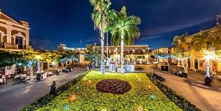

La Plazuela Machado es una de las más antiguas de la Ciudad de Mazatlán; los registros históricos nos dicen que se construyó en el año de 1837 bajo los auspicios de un rico comerciante en plata, telas y perlas, Don Juan Nepomuceno Machado.Originalmente a la Plazuela se le construyó una explanada a la que se rodeó con 36 majestuosas bancas de piedra y frondosos árboles de naranjo, motivo esto último por lo que a este lugar se le llegó a conocer por mucho tiempo como el “Paseo de los Naranjos”. La Plazuela Machado es una de las sedes de los festejos de Carnaval, ya que año con año se realiza en este lugar una muestra gastronómica, en la que participan los mejores y más representativos restaurantes de la localidad.

